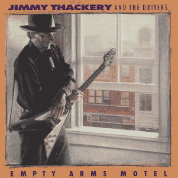

|
 Jimmy Thackery - g, v Produced by J.Thackery & J.D.Giudice Первый студийный альбом Джимми Текери после ухода из Nighthawks - праздник и подарок для любителей белого электрогитарного блюза в самом чистом его проявлении - в гитарном трио: гитара, бас, ударные. Насколько свежо и живо, оказывается, может звучать эта формула в 90-х! Единственный трек на "четверочку" - стандарт БиБиКинга PAYING THE COST TO BE THE BOSS ("Пока я плачу по счетам - я в доме главный!"). В новом поколении даже блюзмэны испорчены политически правильным мышлением (politically correct), и Дж.Такери явно не хватает решительности, чтобы указать своей дрожайшей половине - ее место в доме. В записи принимал участие худрук бибикинговского бэнда W.King (Уорен Кинг), но даже его наставления, как не старался грозно хрипеть Дж.Такери, - не помогли придать голосу грозной внушительности. В остальном - альбом не имеет слабых мест. Текери обошел ловушку, обычную для гитарных трио - альбом неоднообразен! Заглавный "Мотель пустых объятий" (где "для занятий баллетом предоставляется бесплатный партнер") звучит слегка в русле мистических блюзов J.Campbell (Джона Кэмпбэлла). Чувствуется и сильное влияние S.R.Vaughan. Но в целом - это, безусловно, самостоятельная работа. Фантазии для сочинительства и гитарных соло Текери - не занимать. И кавер-версии в этом альбоме - не менее интересны, чем его собственые песни. Из стандартов - вечная электрогитарная тема J.Hendrix (Дж.Хендрикса) о "Красном доме" (Red House) и "Дорогая, цыц!" (Honey, Hush) L.Fulson'a (второй антифеминистский блюз в альбоме). Из редких - относительно (по меркам Бо Диддли) медленный блюз "Я знаю" (I Can Tell) и совсем медленный шикарный блюз сочинения одного из участников маддиуотерсовского блюзбэнда L.Johnson (Лютера Джонсона) Lickin' Gravy. Так же присутствует виртуозная инструментальная пьеса SRV "В грубом настроение" (Rude Mood), но исполнена она без грубости, чистенькой и "облегченной" (по тембру звучания) гитарой. (Возможно, для Теккери было важно именно в своем дебютном альбоме вспомнить о великих и любимых им музыкантах, которые оказали решающее влияние на формирование его собственного музыкального стиля.) Напоминание о процветавшем когда-то у белоблюзовых гитаристов "южном роке" (South Rock) - песня "Я люблю кататься" (Love To Ride), в которую Текери вправляет четыре строчки из S.House (Сона Хауза) "Preachin' My Religion". Так же, играючи смешением эпох, в ритмэндблюзовом инструментальнм номере Last Night ("Прошлой ночью") он цитирует такой же архиклассический для рока диппепловский" риф "Дым над водой" (Smoke On The Water), каким является куплет Сона Хауза - для блюза. А если коротко - это энергичный, разнообразный интересный альбом с великолепными гитарными соло. Это рок-блюз, где "блюз" - корень, а "рок" - только приставка. Выполнено без показного блеска - отличный образец токо, как хорош бывал клубный блюз электрогитарного трио в 90-х. Можно поставить, когда в гости приходят друзья, не слишком увлеченные блюзом. А если такие к вам не ходят, в любом случае, балластом этот альбом в коллекции современного блюза - не будет. |